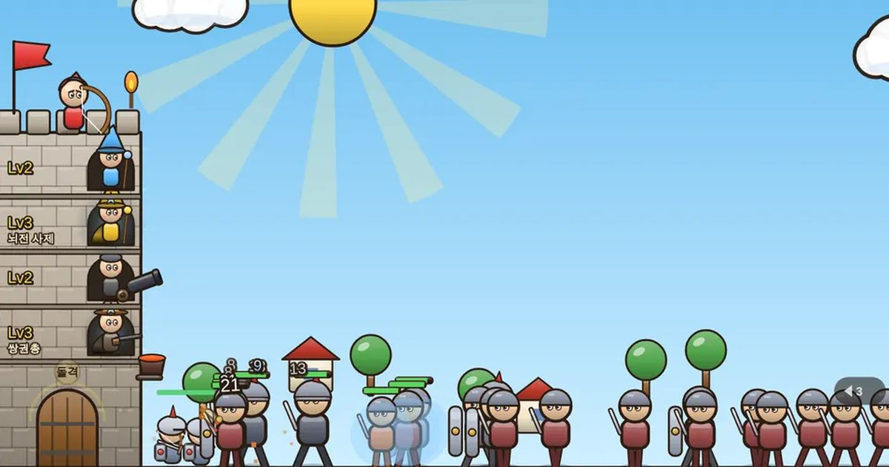

성 지키기
Castle Keep
디펜스 · 전략무료설치 없음폰 · PC
▶ 지금 바로 하기로그인 없이 브라우저에서 바로 시작돼요
어떤 게임인가요?
6개 마을을 돌며 성을 지키는 대작 디펜스! 7층까지 쌓아 영웅을 배치하고, 성문 수비대와 함께 낮과 밤을 버티세요. 활을 키우면 불화살 · 폭발 화살 · 황금 화살로 바뀌고, 메테오로 전장을 불바다로!
목표 · 끝없이 몰려오는 웨이브를 막으며 최대한 높은 웨이브까지 버티세요. 성벽이 무너지면 끝.
게임 방법
- 화면을 누른 채 뒤로 끌었다 놓으면 내 화살. 머리를 맞히면 두 배.
- 웨이브 사이 정비: 층을 올리면 영웅 자리가 생겨요. 빈 층을 눌러 영웅을 고용하고, 영웅 칸을 누르면 강화.
- 물리(궁수·대포·내 화살)는 철갑 기사에게 약하고, 마법(불·얼음·번개)은 잘 통해요.
- 방패병은 정면 화살을 막아요. 위에서 내리꽂거나 광역 공격으로.
- 대포는 하늘의 적(박쥐·용)을 못 맞혀요. 주술사는 주변 적을 회복시키니 먼저 처치!
- 5웨이브마다 보스(거인 · 용 · 해골 왕 · 거대 골렘). 체력이 반 아래로 떨어지면 화가 나서 빨라져요.
- 새 적: 적 궁수는 멀리서 쏘고, 폭탄병은 닿으면 터져요. 트롤은 불에 타는 동안만 재생이 멈추고, 골렘은 부서지면 갈라져요. 흑마법사의 보호막은 한 번 막아 주고, 유령이 흐릿할 땐 물리 화살이 통과해요.
- 영웅을 Lv3 · Lv6까지 강화하면 진화! 궁수는 화살이 늘고, 대포는 쌍포, 마법은 범위가 커져요.
- 적을 쓰러뜨리면 각성 게이지가 차요. 100%에서 「각성」을 누르면 8초간 황금 화살이 쉴 새 없이 나가요.
- 성문을 누르면 기사단이 말을 타고 돌격해 적을 밀어내요. 성벽 위 끓는 기름 가마솥은 성 앞 적에게 자동으로 쏟아져요.
- 성 창문의 영웅을 누르면 전직표가 열려요: 1차 → 2차(Lv3) → 3차(Lv6) 모습과 능력을 볼 수 있어요.
- 마을마다 나오는 적과 보스가 달라요. 새 전장 시작 때 이번 마을의 적을 알려 줘요.
- 아이템(불·다발·화살비·천둥)은 적이 가끔 떨어뜨리는 구슬, 보스, 3웨이브마다 보급, 보너스 풍선 사격의 금 풍선에서 얻어요. 종류마다 최대 5개.
- 보스를 잡은 다음 웨이브는 보너스 풍선 사격! 영웅은 쉬고 직접 쏴서 금화와 아이템을 모아요.
- 왕국 정복: 지도에서 이웃한 땅을 하나씩 점령해요. 점령한 땅마다 모든 모드의 시작 금화와 성벽이 늘어나요.
- 성이 무너지면 그 웨이브 시작 직전으로 돌아가 다시 할 수 있어요 (시범 기간이라 횟수 제한 없음). 나갔다 들어오는 건 언제든 자유 (웨이브 시작 직전부터 이어져요). 일시정지에서 「지금 기록 남기기」로 점수를 바로 기록할 수 있어요.
등장하는 것들
- 궁수 · 빠른 단일 · 물리
- 불 마법사 · 광역 · 마법
- 얼음 마법사 · 광역 둔화 · 마법
- 대포 · 지상 광역 큰 피해
- 번개 사제 · 3명 연쇄 · 마법
- 수리공 · 성벽 회복
공략 팁
- 초반엔 궁수 + 불 마법사 조합이 무난해요. 4웨이브부터 철갑 기사가 오니 마법 영웅을 꼭!
- 얼음 마법사로 느리게 만든 뒤 대포·불로 몰아치면 강해요.
- 수리공은 보스 웨이브 직전에 큰 힘이 돼요.
 통통 배구
통통 배구 과일 베기
과일 베기 지뢰찾기
지뢰찾기 십장생 짝맞추기
십장생 짝맞추기 제기차기
제기차기 필살 격투
필살 격투